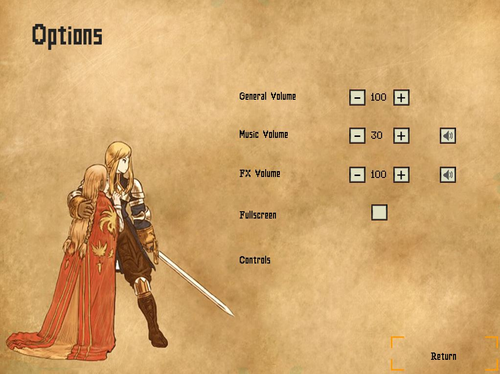

Enric Pérez Rifà
-
Role: UI
-
Age: 20 y.o.
-
From: Cerdanyola del Vallès
-
Github: PerezEnric
My Work
As responsible of the UI I have designed almost the different features and programmed some of them. Of course,
I could not have designed neither programmed what I have done without the help of the different roles such as art, design and code.
Screens
First of all, as a UI designer I designed the following screens.
Main Menu
In this screen I took the background image from Final Fantasy Tactics and put the buttons without background in order to make the interface clearer
so the player will not be overwhelmed with too much images.
Options Menu
This menu took different changes along the development so we finally got this version due to the usefulness of the different buttons,
such as the volume up and the buttons, that previously were sliders.

End Game Screen
This screen is used as a credits screen so as soon as the player completes the game, the screen will appear and show all the members of the team
and the roles they took part.
Select Character Menu
Specifically, in this menu I took part both as a designer and as a programmer. I made the buttons design, such has idle, hover and click animations.
I took the characters' images and photoshoped them in order to fit in the screen. In addition, the characters' information about their health points,
mana points and attack, so the player gets useful information about which character fits better with his playing style.
HUD
One of the most features I focused the most part of the time is implementing the HUD in the game. In this case I both designed and programmed.
Old HUD
First of all, the HUD that actually is in the game suffered different changes. Due to playtests, we finally got that was a bit ugly and
confusing. In conclusion, it was not as useful as we thought and should be changed.
New HUD
By getting inspiration from other games and surfing the Internet I finally came up with a solution for the problem. And with the help of
the designer and the artist we got the HUD that is now in he game.
 As you can see, althought the art is different it gives almost the same information. We added the level of the player so he can know which
level is instead of going to inventory, so it is faster. And we deleted the compass, so every time the player wants to know in which direction
is going, arrows will appear around him.
In addition, thanks to playtests we saw that players forgot the abilities they have, so with the designer agreed that it will be useful for players
to know the abilities that has got. So every time a new ability is got, it will appear in the right of the screen.
Moreover, if the ability has to be hold to be used, a bar next to the ability will show how much
time rests to me used. In this way, the player will not forgot the abilities he has.
As you can see, althought the art is different it gives almost the same information. We added the level of the player so he can know which
level is instead of going to inventory, so it is faster. And we deleted the compass, so every time the player wants to know in which direction
is going, arrows will appear around him.
In addition, thanks to playtests we saw that players forgot the abilities they have, so with the designer agreed that it will be useful for players
to know the abilities that has got. So every time a new ability is got, it will appear in the right of the screen.
Moreover, if the ability has to be hold to be used, a bar next to the ability will show how much
time rests to me used. In this way, the player will not forgot the abilities he has.


Bosses
Finally, I designed and programmed bosses bars inspired in dark souls saga.